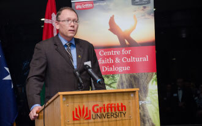
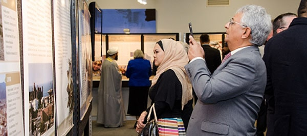

Griffith University, Australia 2016



July 12 through July 22, 2016.
The first exhibition to be hosted in Australia opened on July 12, 2016, in Brisbane on the campus of Griffith University, at the Centre for Interfaith & Cultural Dialogue.
Visitors were greeted by the aroma of Omani frankincense wafting from terra cotta burners placed at the entrance. In attendance were approx 80-100 visitors, including students, faculty & staff of the university; several police commissioners; representatives of various faith communities; members of the Queensland Omani Society; plus representatives of the Department of Social Services; Middle East Connect; Access; Eid festival; Queensland African Community Council; the Consul of India; and others.
Presiding over the opening ceremony was the director of the Multifaith Centre, Dr Brian Adams, who welcomed the Omani delegation, local dignitaries, students, faculty and staff, and visitors. Speaking on behalf of Griffith University, Pro Vice Chancellor and Head of Campus (Logan) Professor Lesley Chenoweth said that “Griffith has always had a strong commitment to and relationship with Asia, so bringing Oman here is a new and special honor. Griffith has always been committed to making a difference ... “

Representing the Ministry of Awqaf and Religious Affairs, Mohammed Al Mamari expressed his gratitude to the university, and to the Omani Society of Queensland, whose members provided informational materials, brochures, pamphlets, flags, banners, books, etc. Approx 10 students dressed in dishdashas mingled and interacted with the crowd.
In his speech Al Mamari stated “now we have the honor to deliver Oman’s message of tolerance; acceptance and peaceful coexistence here, at Griffith, just as we have done in Europe, North & South America, Asia and Africa.”

From the website of the Centre for Interfaith & Cultural Dialogue: “Respect through understanding”
The work of the Centre for Interfaith & Cultural Dialogue (ICD) is to foster respect for one another through deepening our understanding of one another. The more we understand one another’s religious, cultural and philosophical perspectives, values and traditions, the better our ability to work together to strengthen our communities and overcome the challenges facing the world.